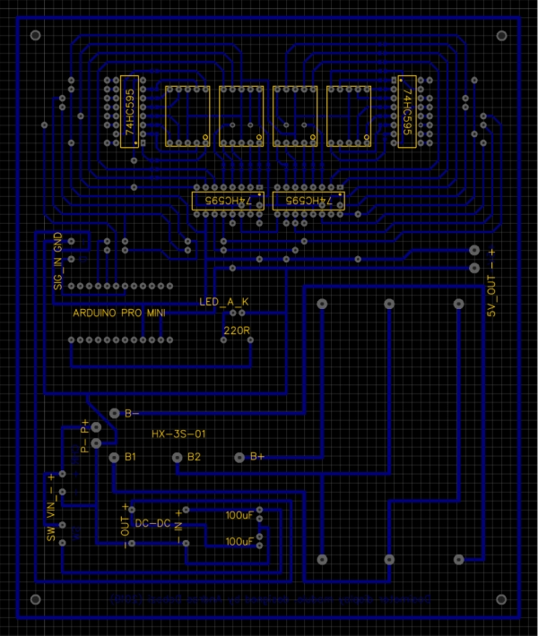

Dosimeter Display Module
Introduction:
Few weeks ago, I bought a radiation detector board and after I connected it to an Arduino, the value of background radiation was displayed very well. To make more use of it and make it mobile, I decided to make a display module for it.

Hardware:
- Geiger Counter Kit Module (link at the bottom of the page)
- Arduino Pro Mini (+ programmer)
- 4x 7 segment LED display (common cathode)
- 32x 220R SMD resistor
- 4x 74HC595N shift register IC
- HX-3S-01 battery protection board
- 3A DC-DC step-down converter
- Battery holder for 3 x 18650
- 3x 18650 Li-Ion rechargable battery
- 2x 100uF 16V capacitor
- Regular LED
- 220R resistor
Operation:
The detector board sends signals to the Arduino every time when it detects gamma or soft beta rays. These signals can be recognised on an interrupt pin. There is a conversion factor (0.00812) which converts the count per minute value to uSV/h. The board displays this value. Bacause the microcontroller doesn’t have enought GPIO pins to drive all the segments of all displays I used shift registers. Using only 3 pins we can drive “unlimited” segments with daisy-chained shift registers. One pin for clock, one for data and one for latch. The program counting the detections in 10s cycles, converting it to uSV/h and displays the converted value. The battery pack can be charged by 12V – 19V, min. 1A power supply.
Links: